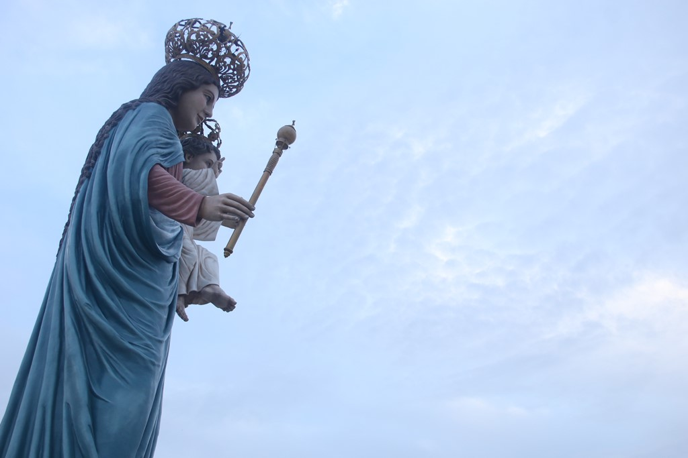
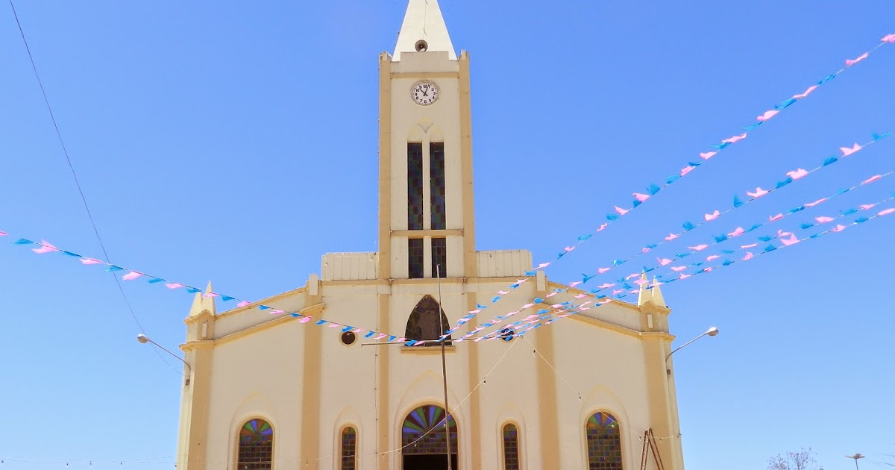

Informações técnicas sobre relevo, população, IDH etc.
| INFORMAÇÕES | |
|---|---|
| Municípios limítrofes | Norte: Aiuaba, Leste: Antonina do Norte ,Potengi e Assaré Sul: Salitre, Oeste: Fronteiras e Pio IX (ambos no estado do Piauí) |
| Fundação | 29 de julho de 1899 (122 anos) |
| Área total | 1.082,582 km² |
| Clima | Tropical quente semiárido |
| IDH | 0,630 |
| PIB | R$ 6.896,85 |
| INFORMAÇÕES TERRITORIAIS | |
|---|---|
| Número de habitantes | 27 426 habitantes |
| Superfície de Campos Sales |
108 277 hectares
1082,77 km² |
| Densidade populacional | 25,3 ha./km² |
| Altitude de Campos Sales | 559 metros de altitude |
| Coordenadas geográficas decimais |
Latitude:
-7.07608
Longitude: -40.376 |
| Coordenadas geográficas sexagesimais | Latitude: 7° 4' 34'' Sul , Longitude: 40° 22' 34'' Oeste |
| INFORMAÇÕES DO MUNICÍPIO | |
|---|---|
| Endereço da Prefeitura Municipal de Campos Sales |
Campos Sales
Prefeitura de Campos Sales
Travessa Sul, Nº440 - Centro Campos Sales - CE, 63150-000 Brasil |
| Telefone da prefeitura |
(88) 3533-1666
Internacional: +55 88 3533-1666 |
| Fax |
(88) 3533-1403
Internacional: +55 88 3533-1403 |
| Endereço electrónicoda prefeitura |
gab.prefeito@campossales.ce.gov.br
|
| Site oficial do município | campossales.ce.gov.br |
| INFORMAÇÕES DO ADMINISTRATIVAS | ||
|---|---|---|
| Prefeito de Campos Sales | JOÃO LUIZ LIMA SANTOS | |
| Partido politico | PDT | |
| INFORMAÇÕES DE TRANSPORTE | |
|---|---|
| Transporte urbano disponível | - |
| Aeroporto |
Aeroporto Regional do Cariri
123.2 km
Aeroporto de Picos
126.9 km
Aeroporto de Petrolina
255.5 km
|
| INFORMAÇÕES DE DISTÂNCIA A OUTRAS CIDADES | ||
|---|---|---|
| São Paulo : 1952 km | Rio de Janeiro : 1788 km | Brasília : 1271 km |
| Salvador : 687 km | Curitiba : 2251 km | Belo Horizonte : 1470 km |
| Manaus : 2223 km | Fortaleza : 425 km mais perto | Recife : 616 km |
| Goiânia : 1441 km | Belém : 1098 km | Porto Alegre : 2796 km |
| Guarulhos : 1931 km | Campinas : 1902 km | São Luís : 668 km |
| Distância calculada em linha reta! | ||
Conheça mais sobre a história de Campos Sales.
Nas terras localizada ao oeste da Chapada do Araripe, viviam várias etnias tais como os índios Kariri,[8] antes da chegada das entradas no interior brasileiro durante o século XVII.
Os integrantes das entradas, militares e religiosos, mantiveram os primeiros contatos com os nativos, estudaram todas a região dos Cariai, catequizaram os desencadearam e os agruparam em aldeamentos ou missões. Os resultados destes contatos e descobrimentos desencadearam notícias que na região tinha ouro em abundância e em seguida desencadeou-se uma verdadeira corrida para os sertões brasileiros, onde famílias oriundas de Portugal, sonhando com as riquezas de terras inexploradas e com a esperança de encontrar o minério, que as levariam a aumentar o seu patrimônio material, além de aumentar o seu prestigio pessoal com a corte portuguesa.
A busca do metal precioso trouxe para a região do Sertão do Cariri, a colonização e com consequência a doação de sesmarias, o que permitiu o surgimento de lugarejos e vilas.
Deste contexto surge Campos Sales, um núcleo urbano que cresce ao redor da fazenda Várzea das Vacas e que consolidou-se como centro comercial devido a sua proximidade com o Piauí.
Em 31 de Janeiro de 1991 por volta das 22:00 h, alguns agricultores presenciaram a queda de um meteorito de categoria Contrito (L5) pesando 3,5 kg batizado de Campos Sales nas coordenadas: 7°02' S; 40°10' W nas proximidades do distrito de Calderão mais preciso na localidade de Poço Redondo cerca de 16 km da sede do Município. Esse fato, passa a ser de grande importância para a Astronomia e no campo da pesquisa de meteoritos extraterrenos que são registrados todos os anos. E hoje uma pequena quantidade está no Museu Nacional no Rio de Janeiro. fonte: CAPO - Clube de Astronomia Pesquisa e Observação de Campos Sales
Saiba mais sobre os melhores lugares e o que fazer em Campos Sales.
Travessa José De Alencar, Campos Sales - CE, 63150-000
 Igreja Matriz Nossa Senhora da PenhaR. Carneiro Mendonça, 8, Campos Sales - CE, 63150-000

Veja como chegar nos melhores pontos de Campos Sales